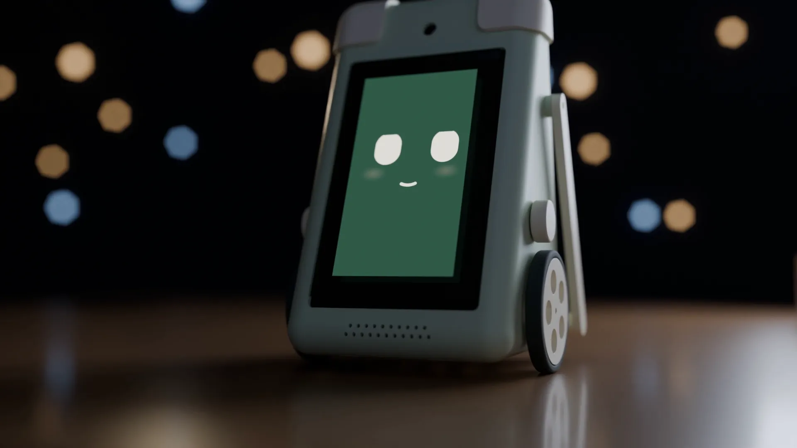
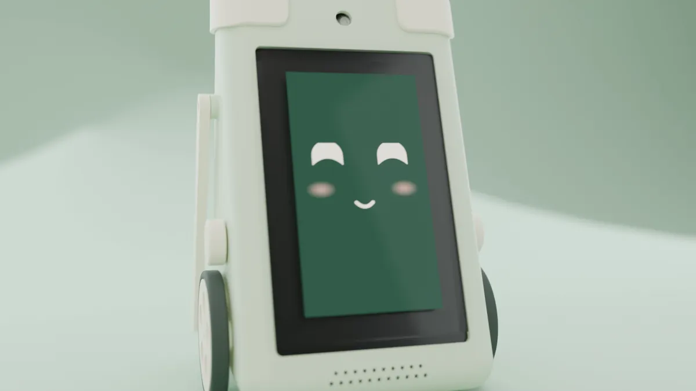
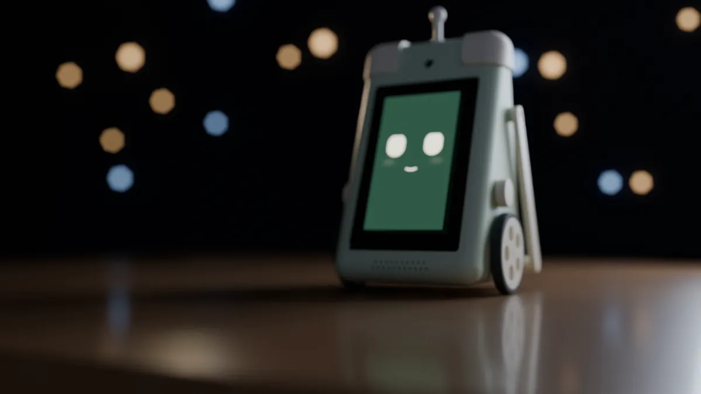
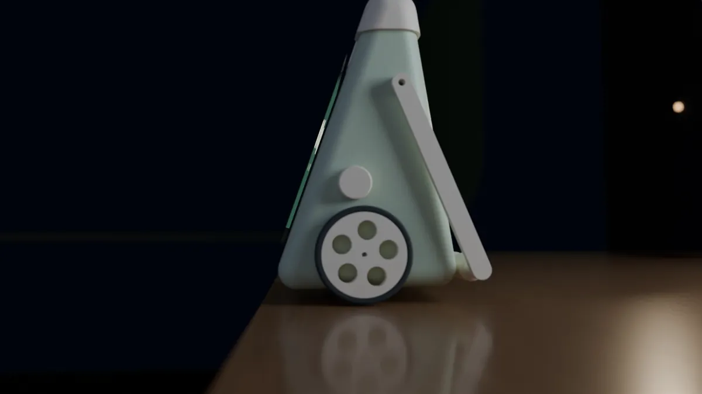
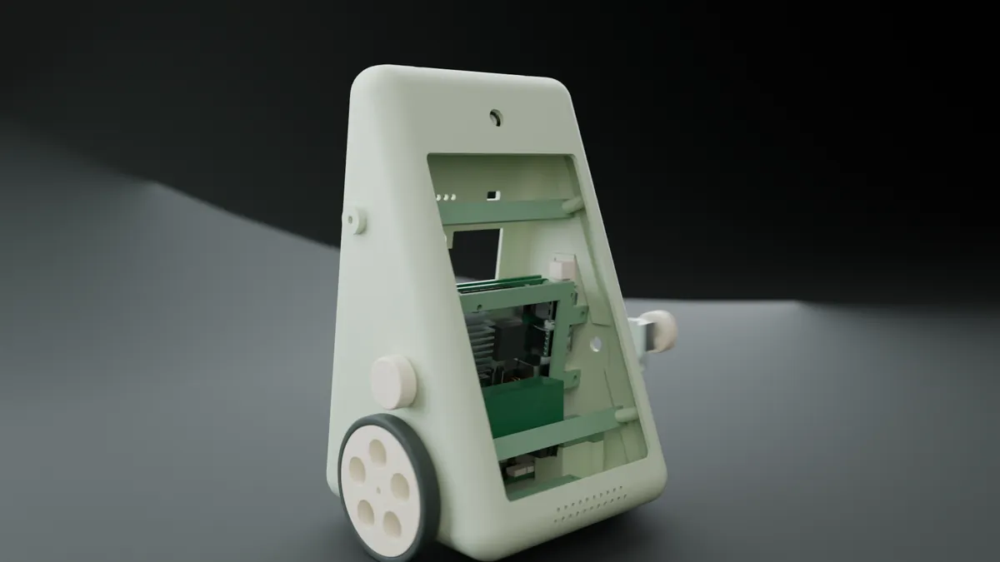
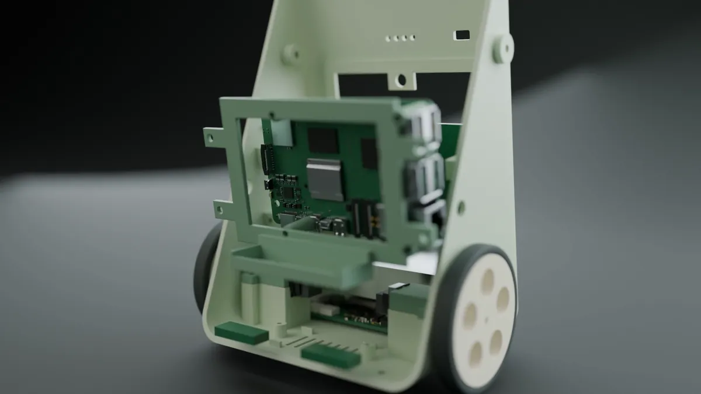
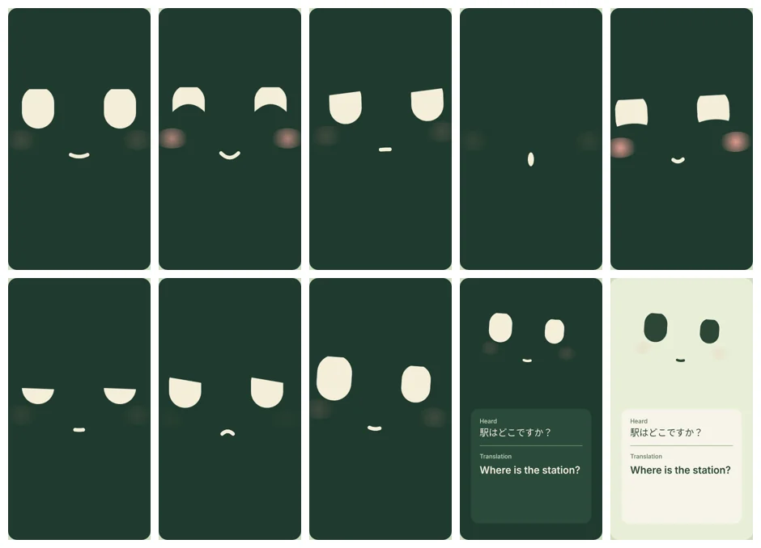
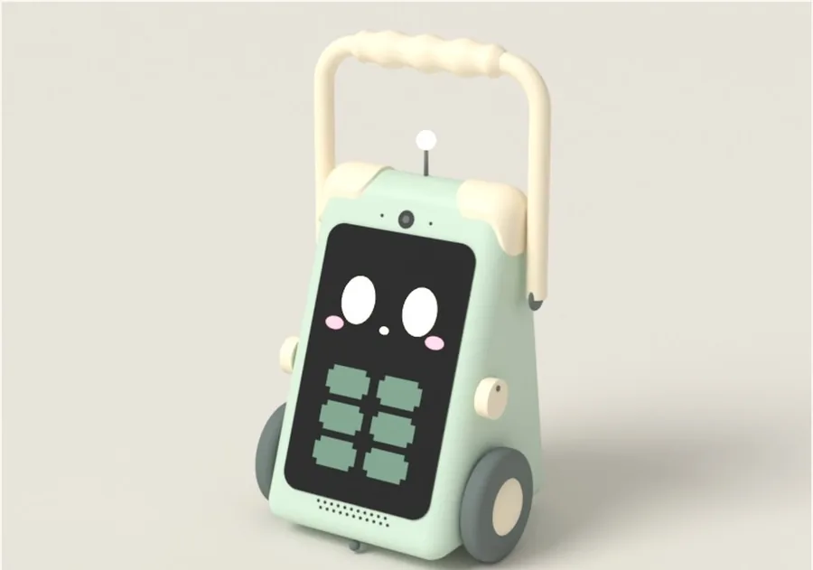
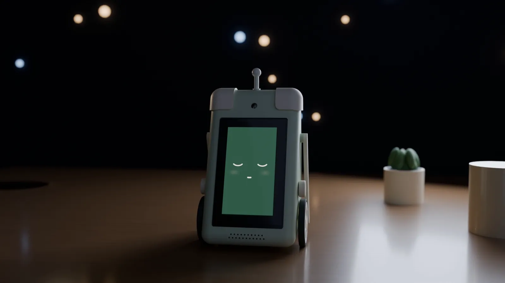

A calm face
Moods, blinks and glances on a 5-inch touchscreen. Expressive without being loud.


A small wedge of calm.
A small AI desk companion with a gentle face. Talk with it, let it interpret for you, or open the mini PC hidden inside. A personal project: I designed it and I'm building its software and AI.
The launch film
Rendered in Blender. Every shot, caption and sound was built for this project.

The vertical cut, for phones.
What it does
About 12 cm across, Kusabi drives around your desk, holds AI conversations, interprets between languages, and opens into a tiny computer when you need one. The features below are the design target; the companion software is in development.
Moods, blinks and glances on a 5-inch touchscreen. Expressive without being loud.

An AI companion you can chat with and ask things, out loud. It can also interpret live: Japanese, English and many more.

Press the dial and the face gives way to its own launcher: notes, browser, terminal, music.

Two motors with wheel encoders take it anywhere on your desk.

It knows where the desk ends, and stops before it gets there.

Autofocus camera, microphone and speaker for conversation.

Two dials, two buttons and a status light on the antenna. No app needed for the basics.

A quad-core computer runs the face, the voice and the apps.

Swappable batteries with USB-C charging.

Personality
Most desk robots perform all the time. Kusabi is designed to be quiet company: slow blinks, small glances, a sleepy face at night, and a clear view of what it heard while you talk.
The colours come from matcha: a soft green body, cream accents and a deep green screen. The name means "wedge" in Japanese, which is the shape of its body from the side and of the "a" in its wordmark.
Design
Kusabi started as a literal wedge and grew taller as the requirements did: a real screen, room for a Raspberry Pi, a battery you can swap, and something to carry it by.




How it was made
I research AI for a living: explainability, LLM post-training and how these systems are evaluated. Hardware is not my field. Kusabi is partly a robot I want on my desk, and partly an experiment: how far can one person outside a field get with AI tools, and where do those tools quietly go wrong?
I came up with Kusabi: the concept, the character, its look and its face, and I made the design decisions throughout. The software and AI features are mine to build. For the hardware, I worked with Claude Fable 5.2 as my design assistant, directing and checking every step:
The tools were fast and often impressively right. They were also confidently wrong in ways that only show up when you look at the whole thing. A few examples:
Before anything is manufactured, the electronics are being reviewed by a veteran circuit engineer with more than 30 years of experience designing electronics, including world-first consumer devices. Besides the usual list of fixes, I asked for something extra: notes on what looks unusually good, unusually odd, or simply wrong for a human designer. Those notes become data on where AI-assisted design holds up and where it doesn't.
This is a portfolio piece, not a kit. The design files, circuit schematics, board layouts and parts list are deliberately not published. Kusabi is an original design and character.